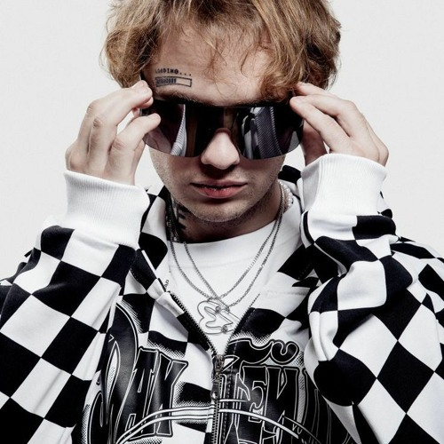

LIDA
Поп-рейв · Москва · 2013-н.в
Lida — псевдоним Николая Ромадова. В 14 лет он собрал рок-группу, потом сводил треки и участвовал в рэп-батлах, а в 2013 году начал выступать как Фрио. Карьере помог YouTube, где он выкладывал каверы и ролики по Dota 2. Сегодня его звук сочетает панк, рэп и поп, а главные треки — «ЧСВ», «Фото со звездой», «Грустный рэп», «Тряси» и «Стикер».
Ближайший большой концерт пройдёт 15 ноября 2026 года в «Live Арене» в Московской области. В программе заявлены известные хиты и новая версия песни «Маленький самолёт» вместе с трио Травма и Валерией.